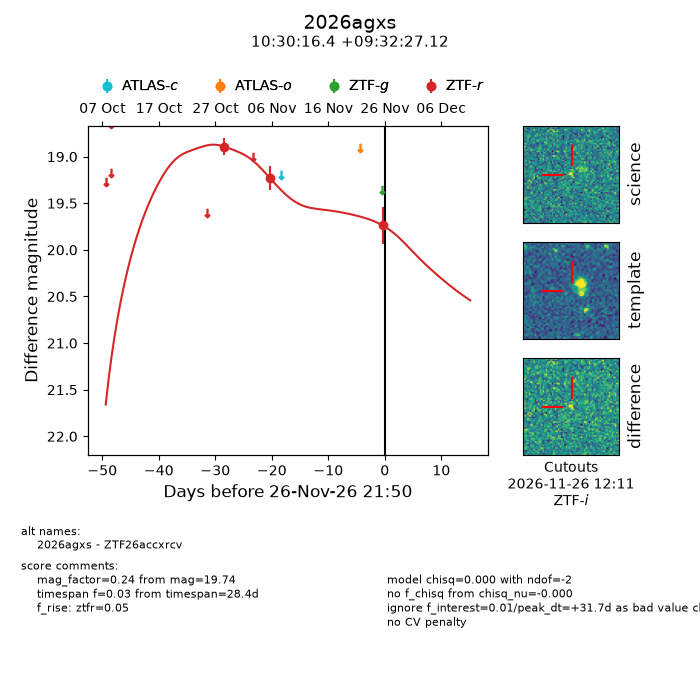
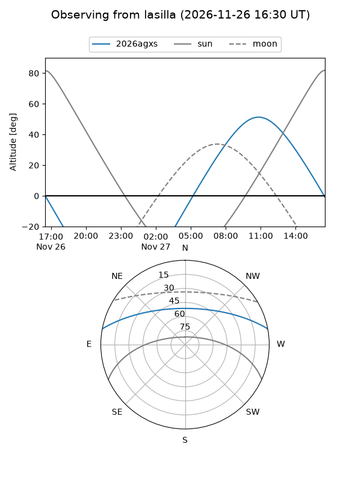
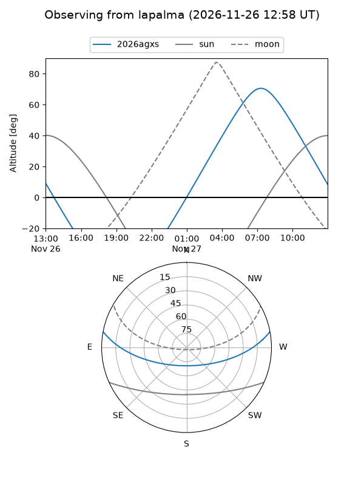
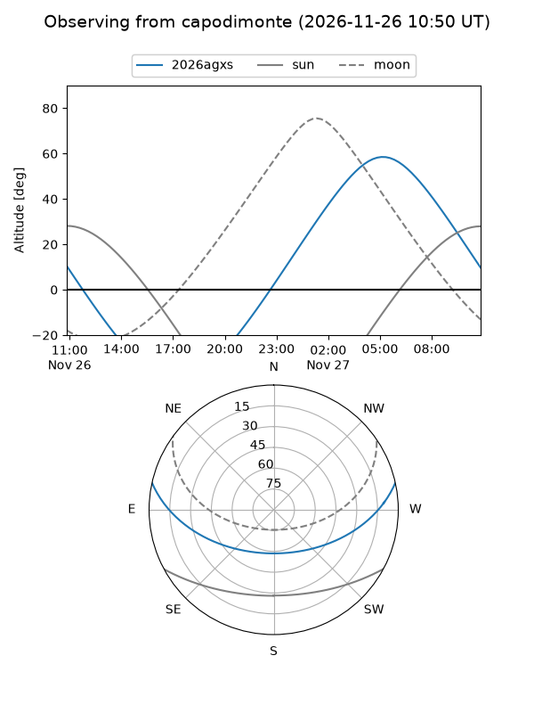
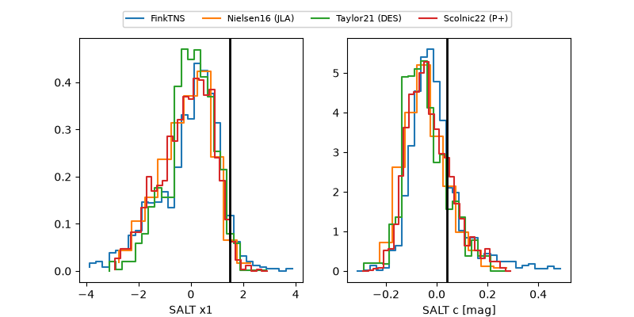

2026agxs
Target 2026agxs at 2026-11-26 21:51
Aliases and brokers:
FINK-ZTF: ztf.fink-portal.org/ZTF26accxrcv
Lasair-ZTF: lasair-ztf.lsst.ac.uk/objects/ZTF26accxrcv
ALeRCE-ZTF: alerce.online/object/ZTF26accxrcv
YSE-PZ: ziggy.ucolick.org/yse/transient_detail/2026agxs
TNS name: wis-tns.org/object/2026agxs
Direct TNS query: direct search
alt names
ZTF26accxrcv (ztf,fink_ztf)
2026agxs (tns,yse)
Coordinates:
equatorial (ra, dec) = 157.5683,+9.54087
equatorial (HMS+DMS) = 10:30:16.39,+09:32:27.12
galactic (l, b) = (234.0036,+52.36936)
Flags:
peak dt: +31.7
Photometry:
last ztfr=19.74
3 ztfr detections
Lightcurve

Visibility



Additional plots
